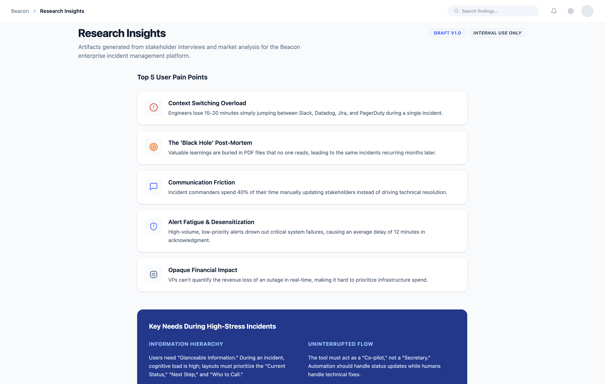
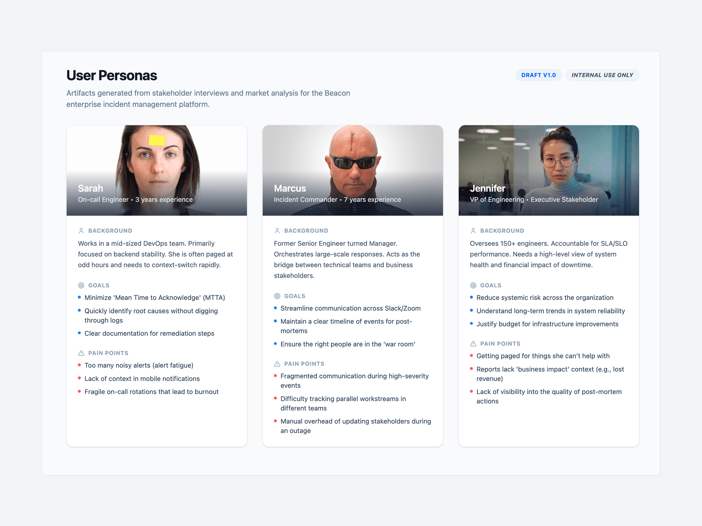
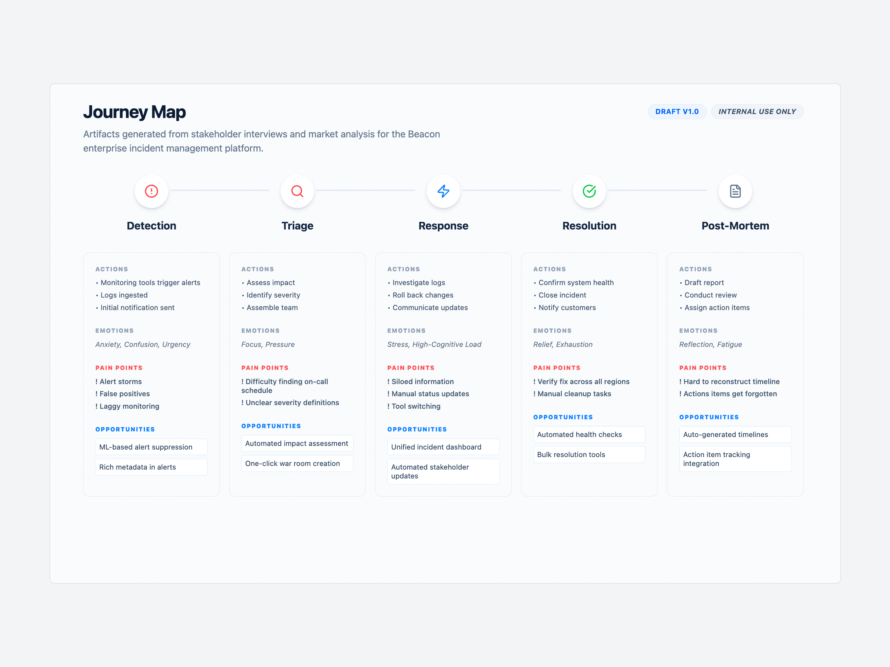
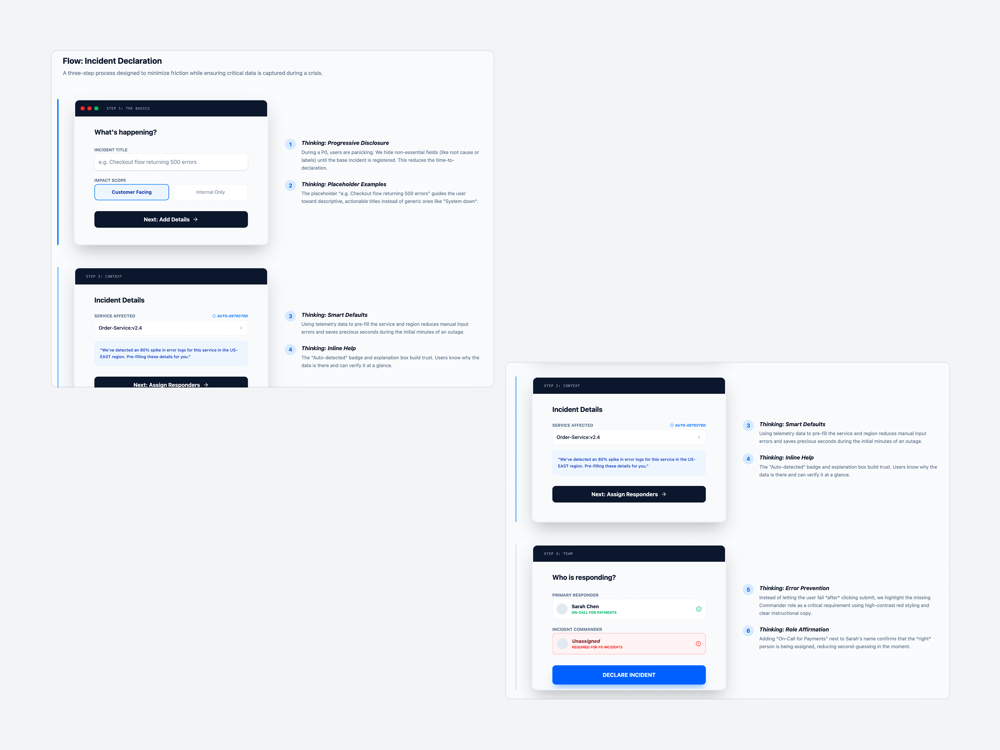
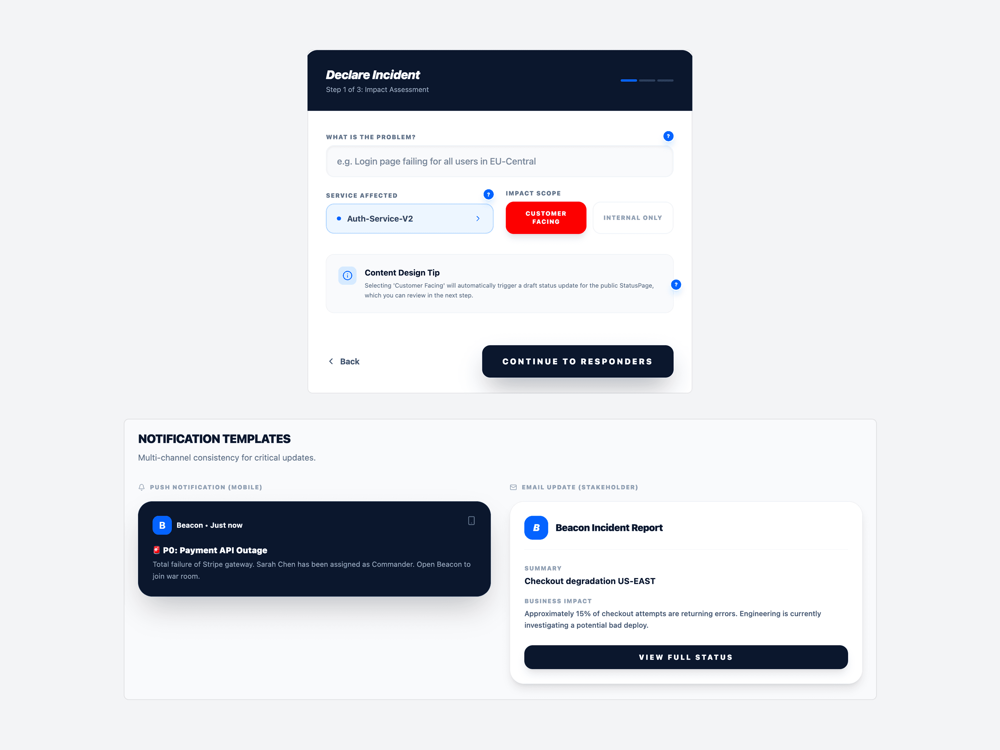
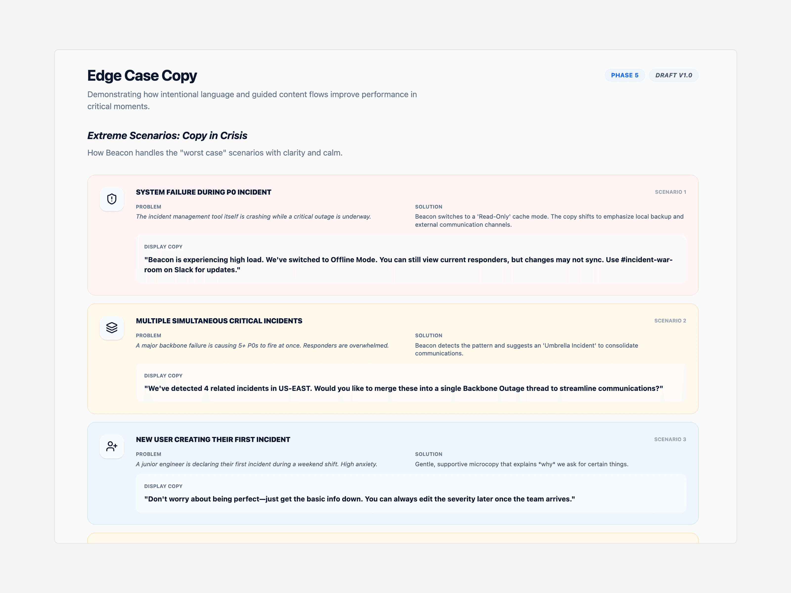
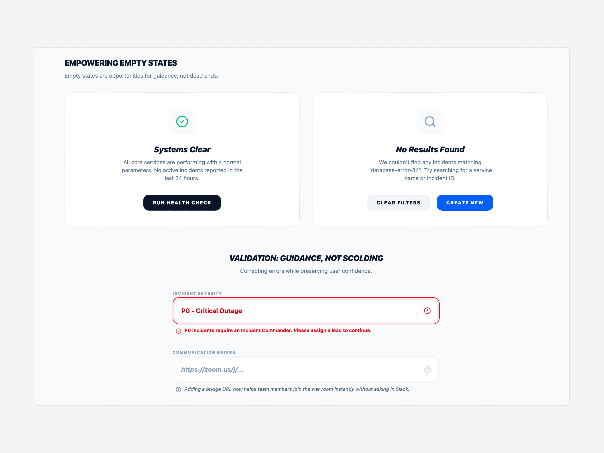
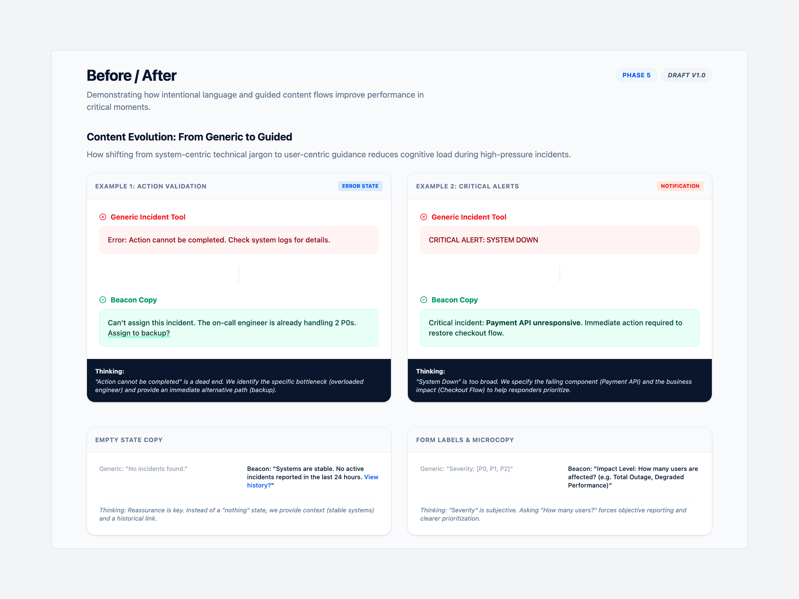

Beacon: Enterprise Incident Management Platform for IT Operations Teams
Beacon is an incident management platform built for IT operations teams responding to critical system outages. Research going into the redesign found engineers resolving P0 incidents 40% slower than they should, weighed down by corporate-speak and inconsistent severity labels.
Nearly three in four on-call engineers reported real anxiety triggered by the product's own alert notifications. New hires needed two to three weeks just to learn the interface, and executives could not translate technical alerts into business impact without someone walking them through it.

Stakeholder interview findings that shaped the brief
When I get paged at 3 AM, I shouldn't have to decode what the tool is telling me. I need to know what's broken and what to do next.
Senior SRE, Series B StartupA tool used during a company's worst moments cannot ask its users to decode it first. That reframed the brief: this was not a visual redesign that needed better copy. It was a content problem wearing a UI.
Three personas, mapped across the full incident journey from detection to post-mortem, and a content audit of more than 200 inconsistent UI strings showed exactly where that content problem lived: fifteen different ways to describe severity, error messages that blamed users instead of guiding them, and no inline help anywhere in the product. Every fix that followed had to earn its place through testing, not intuition.

Personas across the incident chain of command

Mapping the full incident journey, stage by stage
Test the Verb, Not the Guess
"Acknowledge" beat "Accept" and "I'm on it" in comprehension testing at 94%, against 68 to 71% for the alternatives.
Make Severity Legible at a Glance
A single "P0 - Critical" style hierarchy replaced fifteen inconsistent severity labels.
Enforce a Word Limit
Every system notification was capped at 50 words. During a live outage, engineers do not have time to read. They have time to scan.
Each decision on its own is a small content choice. Together, they add up to a different relationship between the product and the person using it under pressure: less to interpret, less to misread, less standing between an engineer and the fix.
Every incident starts the same way: someone has to declare it, under pressure, in seconds. The three-step declaration flow uses progressive disclosure to hide anything non-essential until the base incident is registered, smart defaults pre-filled from telemetry to cut manual entry, and inline reasoning so responders trust why a field is required instead of fighting it.
That same discipline carries into the notifications the flow triggers. A push alert and a stakeholder email drawing from the same incident record, written for two different reading speeds: one line to scan while running, one paragraph to read while deciding what to tell the business.

The declaration flow, with the content reasoning behind it

One incident, two audiences, two reading speeds
A content system built for calm has to hold up when things go wrong twice over: the product itself failing mid-incident, five P0s firing at once, a junior engineer declaring their first-ever incident under pressure. Each of those scenarios got its own scripted copy, tested against the same principles shaping the rest of the product.
Empty states and validation messages got the same care. A clear system reads as reassurance, not silence. An error reads as guidance, not a scolding.

Scripted copy for worst-case scenarios

Empty states and validation, guidance not scolding
The same generic-versus-Beacon comparison ran across error states, critical alerts, and form microcopy, checking that the "guidance, not scolding" principle held everywhere, not just in the scenarios built to showcase it.

Generic tool copy versus Beacon copy, side by side
The numbers leading this page came directly out of that process. Testing the verb people actually understood, not the one that sounded right, got "Acknowledge" to 94% comprehension. Collapsing fifteen severity labels into one legible hierarchy cut misclassification 62% and got engineers to the right call 40% faster. Neither number came from a redesign. Both came from treating language as the interface.
One message cannot serve three audiences. An engineer, an incident commander, and a VP need different information about the same outage, and the fix was never to write more. It was learning to write for the right person.
Building a tool people rely on in a crisis?
I'd love to hear about your team and where content strategy could help.
Let's work together →